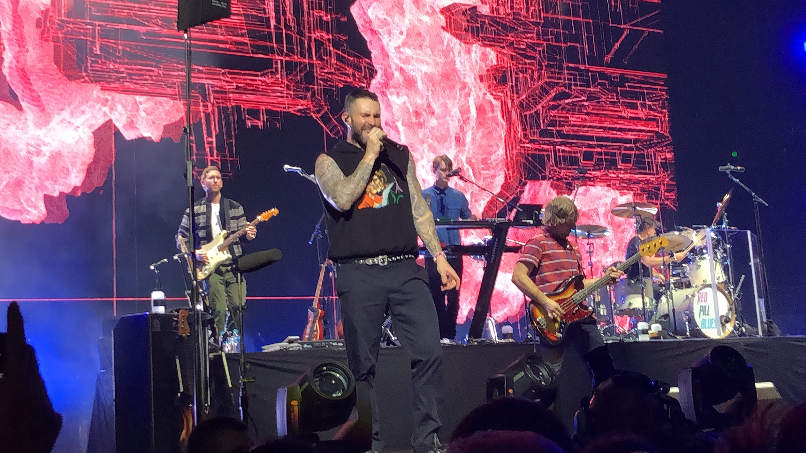

Maroon 5 is an American pop rock band from Los Angeles, California. It currently consists of lead vocalist Adam Levine, keyboardist and rhythm guitarist Jesse Carmichael, lead guitarist James Valentine, drummer Matt Flynn, keyboardist PJ Morton and multi-instrumentalist Sam Farrar. Original members Levine, Carmichael, bassist Mickey Madden, and drummer Ryan Dusick first came together as Kara's Flowers in 1994, while they were still in high school.
After self-releasing their independent album We Like Digging?, the band signed to Reprise Records and released the album The Fourth World in 1997. The album garnered a tepid response, after which the record label dropped the band and the members focused on college. In 2001, the band re-emerged as Maroon 5, pursuing a different direction and adding guitarist Valentine. The band signed with Octone Records, an independent record label with a separate joint venture relationship with J Records and released their debut album Songs About Jane in June 2002. Aided by the singles "Harder to Breathe", "This Love" and "She Will Be Loved", the album peaked at number six on the Billboard 200 chart and went quadruple platinum in 2005. In the same year, the band won the Grammy Award for Best New Artist. In 2006, Dusick left the band after suffering from serious wrist and shoulder injuries and was replaced by Matt Flynn. The band's second album It Won't Be Soon Before Long was released in May 2007. It debuted at number one on the US Billboard 200 chart and the lead single "Makes Me Wonder", became the band's first number-one single on the Billboard Hot 100. In 2010, the band released the third album Hands All Over, to mixed reviews, re-releasing a year later to include the single "Moves like Jagger", which topped the Billboard Hot 100. In 2012, Carmichael left the group and was replaced by musician PJ Morton, as the band released the fourth album Overexposed, with the song "One More Night", topping the Billboard Hot 100 chart for nine consecutive weeks. In 2014, Carmichael rejoined the band alongside Morton to record the fifth album V (pronounced "five"), with the band signed to Interscope Records and Levine's own label 222 Records. Following the release of V, it reached number one on the Billboard 200. In 2016, Maroon 5 recruited their long-time collaborator Sam Farrar, as the band continued for the sixth studio album Red Pill Blues, which was released in November 2017. With the addition of Morton and Farrar, the band's lineup increased to seven members. The successful singles of both albums "Sugar" and "Girls Like You" peaked at numbers two and one on the Hot 100 chart respectively. Maroon 5 has sold more than 120 million records, making them one of the world's best-selling music artists.